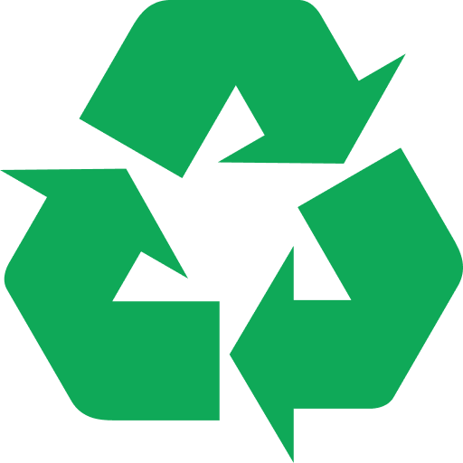
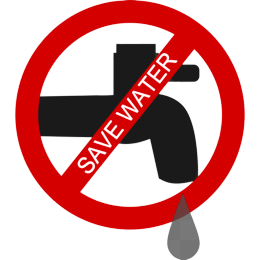
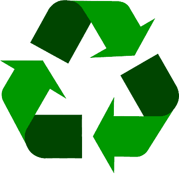

<!DOCTYPE html>
<html lang="en">
<head>
    <meta charset="UTF-8">
    <meta http-equiv="X-UA-Compatible" content="IE=edge">
    <meta name="viewport" content="width=device-width, initial-scale=1.0">
    <title>Consumo Consciente</title>
    <link rel="shortcut icon" href="favcom.icon.png""" type="image/x-icon" />
    <link rel="stylesheet" href="consumo-sustentável.css">
</head>
</html>


<body>
                                <!--começo consumo consciente-->
    
        <h2 class="titintrodução">Consumo Consciente</h2>
     <p class="pintrodução">O Consumo Consciente envolve a escolha de produtos que utilizaram menos recursos naturais em sua produção,
         que garantiram o emprego decente aos que os produziram, e que serão facilmente reaproveitados ou reciclados.
          Significa comprar aquilo que é realmente necessário, estendendo a vida útil dos produtos tanto quanto possível.</p>


                                <!--fim da introdução sobre consumo consciente-->

                                <!--começo principais práticas-->

    
        <h2 class="titpráticas"><i>Principais Práticas do Consumo Consciente:</i></h2>
        <br><br><br><br>


    

   

   <p class="item1">Diminuir o Desperdício de Àgua</p>
   
                <!--fim item 1-->
    <p class="item2">Minimizar a Poluição </p>

                <!--fim item 2-->
    <p class="item3">Favorecer A Reciclagem De Materiais</p>
  
                <!--fim item 3-->
    <p class="item4">Dar Preferência A Alimentos Verdes</p>

    <p class="item5">Economia De Energia Elétrica</p>

    <p class="item6">Apostar Na Compostagem</p>
<br><br><br><br>


                <!--consumo consciente em prática-->
<h2 class="titpráticas2">Como colocar o consumo consciente em prática:</h2>
    <ul class="listpráticas2">
        
        <li>Fechar a torneira enquanto ensaboa a louça; </li>
        <li>Fechar o chuveiro enquanto ensaboa o corpo; </li>
        <li>Apagar a luz ao sair de um cômodo; </li>
        <li>No mercado, escolher embalagens biodegradáveis; </li>
        <li>Reutilizar a água da máquina de lavar para limpar a casa; </li>
        <li>Preferir eletrodomésticos que gastam menos energia; </li>
        <li>Evitar abrir a geladeira muitas vezes ao dia; </li>
        <li>Imprimir apenas o que for necessário; </li>
        <li>Usar frente e verso das folhas de papel; </li>
        <li>Reduzir o uso do carro, preferindo meios de transporte que não usam combustíveis fósseis, como a bicicleta. </li>
    </ul>


    </body>
</html>